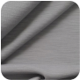

ОДЕЖДА ДЛЯ
ФИГУРНОГО КАТАНИЯ
В КАТАЛОГ
ТКАНИ и УХОД
СТИРКА
Рекомендуем стирать одежду из представленных у нас материалов жидким средством для спортивных тканей вроде "Ласки" или других производителей, как российских, так и импортных.
Смягчитель для белья ("Ленор" и т.п.) добавлять НЕ НУЖНО!
Стирать, вывернув наизнанку. Можно в стиральной машине, лучше на режиме ручной стирки, в холодной воде, максимум до 30 градусов, с минимальным отжимом
Однотонные изделия из тканей Vuelta, Colorado и Chine Soft, без стразов, при сильных загрязнениях можно стирать на режиме синтетики, до 30-40 градусов.
Изделия с сочетанием белого и контарстных к нему материалами (особенно чёрный) стирать вручную, в прохладной
Для изделий со стразами: стирать вывернутыми наизнанку, режим ручной стирки, режим отжима лучше выбирать с самыми низкими оборотами или стирать вообще без отжима. Чем больше стразов на изделии, тем меньше рекомендован отжим в стиральной машине, тем деликатнее должна быть стирка. Если на изделии только аппликация из стразов, то можно стирать в машинке. Если всё платье украшено стразами или стразов очень много, то лучше стирать вручную
Для изделий из фатина (например, юбочка из фатина у платья "Балерина"): стирать вручную, слегка отжать основу, юбочку лучше не отжимать, повесить изделие сушиться на детские плечики, расправить фатин, тогда фатин при высыхании сам примет нужную форму и его не нужно будет гладить.
СУШКА
Сушить изделия из представленных тканей нужно обычным образом, вдалеке от батарей и других источников, излучающих сильное тепло. Можно повесить изделие на детские плечики или положить, расправив, на горизонтальную поверхность, в том числе на перекладины сушильной доски.
Батареи и другие источники сильного тепла портят термоматериалы, постепенно ухудшая их термо- и другие полезные свойства.
Изделия из этих материалов самостоятельно очень быстро сохнут, без обогревательных приборов.
ГЛАЖКА
Представленные у нас ткани практически не нуждаются в глажке (во избежание образования складок не стирайте их на высоких температурах и не отжимайте на больших оборотах в стиральной машине!)
Они прекрасно расправляются на теле. Если всё же вы решите погладить термоодежду для фигурного катания (например, пышную юбку у термоплатья, кроме фатина!), то делать это нужно только изнутри, вывернув изделие наизнанку, с использованием пара, через чистую белую х/б ткань.
Подошва утюга должна быть чистой, со специальным защитным покрытием или напылением.
Температура на утюге должна быть подобрана для искусственных синтетических тканей.
Желательно гладить через чистую хлопчато-бумажную, нелиняющую (белую) ткань (например, кухонное полотенце), положив её на изнанку изделия и прислоняя утюг к ней, а не к самому изделию. В этом случае температуру утюга можно даже немного увеличить, но постепенно и осторожно, подбирая оптимальный режим!
Можно также использовать вместо глажки вертикальное отпаривание (при соблюдении условий эксплуатации вашего утюга или отпаривателя, когда техника не брызгается водой с известковым налётом и не оставляет грязных пятен на материалах).
О ТКАНЯХ
Вся одежда, представленная в нашем магазине, изготовлена только из профессиональных, современных спортивных тканей для фигурного катания.
Большая часть моделей поишита из материалов итальянского бренда «Carvico»*, предназначенных именно для использования в активных видах спорта. Это термоизоляционные, при этом “дышащие” материалы с антибактериальными свойствами, они не задерживают запахов и дают возможность влаге испаряться естественно - так, что одежда сохнет моментально, оставляя кожу сухой. Все это способствует сохранению постоянной температуры тела и максимальному комфорту.
*«Carvico» – известный во всём мире итальянский бренд, специализирующийся на производстве профессиональных тканей для спортивной экипировки.
Ткани «Carvico» проходят обязательную антиаллергенную обработку - подходят даже для самой чувствительной кожи.
Антибактериальная обработка Sanitized препятствует распространению микробов и возникновению неприятного запаха.
Ткань «Polartec» производства Malden Mills является разновидностью флиса. Но только первосортный, высококачественный, изготавливающийся по сложной технологии флис бренда Malden Mills, называется «Polartec».
«Polartec» очень долговечен, не теряет своих термо- и износостойких свойств в течение долгого времени, даже после многочисленных стирок. Флис этого бренда не скатывается, в отличие от подделок, его ворс остаётся пушистым и равномерным.
Костюмы и термобельё из материала «Polartec» особенно рекомендуются начинающим фигуристам, которые ещё мало активны на льду, и всем тем, кому необходимо дополнительное утепление.
Для термобелья больше подходит более тонкий и тянущийся Polartec Power Dry, с уникальными влагоотводящими свойствами.
Для костюмов - более плотный и густоворсовой Polartec Power Stretch.
| Образец | Название | Состав | Плотность | Свойства | Уход |
|---|---|---|---|---|---|
|
«Vuelta» бренда Carvico |
полиамид - 85%, эластан (Lycra) – 15% | 250 г/м2 |
|
машинная стирка до 30-40 градусов
средство для стирки спортивных тканей не требует глажки |
|
|
«Dakota» бренда Carvico |
полиамид - 84%, эластан (Lycra) – 16% | 230 г/м2 |
|
стирка на ручном, бережном режиме, до 30 градусов
средство для стирки спортивных тканей практически не мнётся |
|
|
«Colorado» бренда Carvico |
полиамид - 80%, эластан (Lycra) – 20% | 190 г/м2 |
|
машинная стирка до 30-40 градусов
средство для стирки спортивных тканей не требует глажки |
|
|  |
«CHINE Soft» бренда Carvico |
полиамид - 87%, эластан (Lycra)- 13% | 190 г / 1 м2 |
|
машинная стирка до 30-40 градусов
средство для стирки спортивных тканей не требует глажки |
|
«Artica» бренда Carvico |
полиамид - 57%, полиэстер - 28%, эластан (Lycra) - 15% | 240 г / 1 м2 |
|
машинная стирка до 30-40 градусов
средство для стирки спортивных тканей не требует глажки |
|
|
«Polartec» бренда Malden Mills |
разновидность флиса |
|
машинная стирка до 30-40 градусов
средство для стирки спортивных тканей не требует глажки |